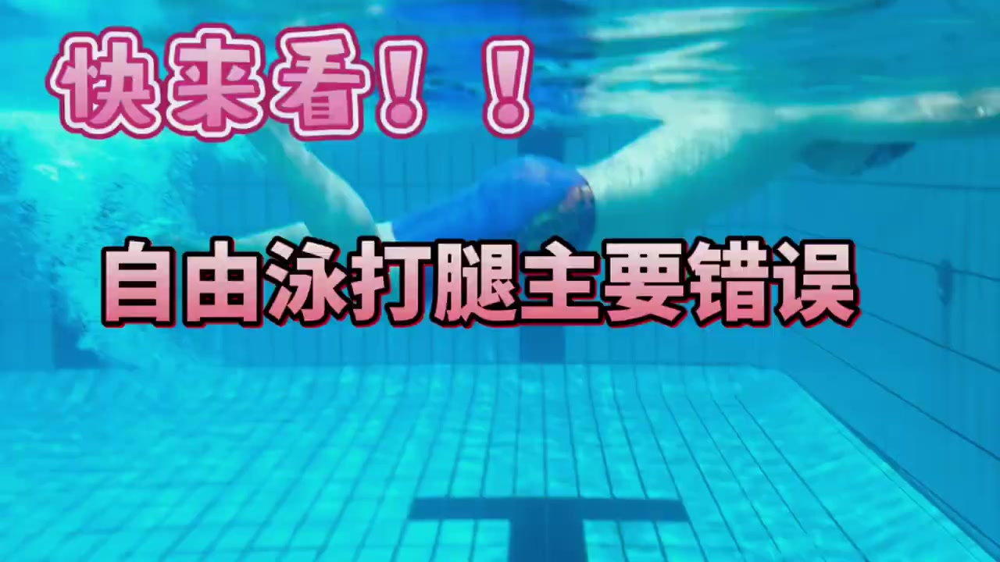
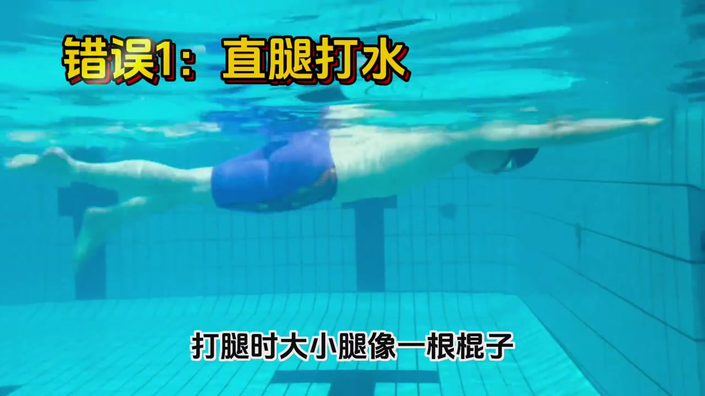
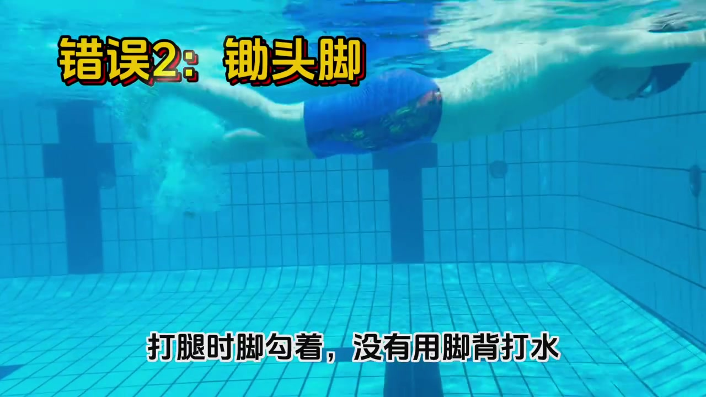
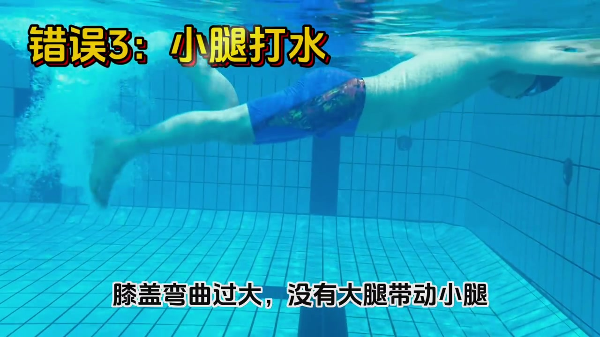
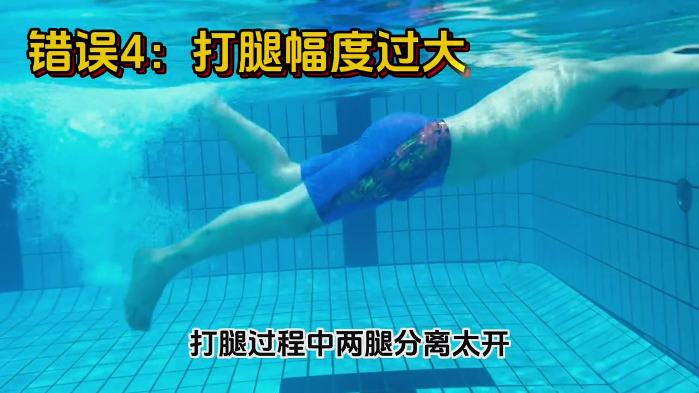

开场 · 00:00
为什么要拍这条：把打腿的坑一次列全
视频开场直接用粉色大字打出「快来看！！自由泳打腿主要错误」，没有铺垫场景或寒暄，节奏很快——这是一条典型的"信息密度优先"的教学短视频：用同一段水下打腿画面反复出现，每次切一个错误点、配一条字幕说明，14秒内讲完四个问题。
本片音轨为背景音乐，几乎没有可辨识人声。Whisper 在这段音乐上产生了与内容完全无关的幻觉文本（识别为英文 "i love you"），不符合视频语言（中文）也不符合画面内容，因此页末转录已按规则标记为「[听不清]」，不凭空补写口播内容。以下叙述完全基于画面中的黄字/黑字字幕与动作证据。

错误 1 · 00:01–00:03
直腿打水错误1：直腿打水——大小腿像一根棍子
画面切到泳者水下打腿的侧后方视角，黄底黑边字幕打出「错误1：直腿打水」，下方黑底字幕补充说明「打腿时大小腿像一根棍子」。从画面看，泳者打腿时膝盖几乎不弯曲，大腿和小腿保持在同一条直线上摆动，缺少膝关节的自然屈伸。

错误 2 · 00:05–00:06
锄头脚错误2：锄头脚——脚勾着，没用脚背打水
紧接着字幕切换为「错误2：锄头脚」，配文「打腿时脚勾着，没有用脚背打水」。画面中泳者的脚踝呈勾状（背屈），脚尖朝上而不是自然绷直，这样打水时用来推水的是脚底而非脚背，形同"锄头"翻土的角度，减少了有效推进面积。

错误 3 · 00:08–00:11
小腿打水错误3：小腿打水——膝盖弯曲过大，大腿没带动小腿
第三段字幕为「错误3：小腿打水」，配文「膝盖弯曲过大，没有大腿带动小腿」。与错误1的"完全不弯"相反，这一处示范的是另一个极端：膝盖弯曲幅度过大，动作发力点落在小腿本身，而不是由大腿带动整条腿做鞭状摆动，导致打腿看起来像"蹬自行车"而非流线型的自由泳打腿。

错误 4 · 00:12–00:14
打腿幅度过大错误4：打腿幅度过大——两腿分离太开
最后一段字幕为「错误4：打腿幅度过大」，配文「打腿过程中两腿分离太开」。画面显示泳者两腿上下摆动的垂直幅度明显偏大，两腿之间的分离距离超出正常自由泳打腿的范围，视频在这一帧结束，没有给出"正确幅度应该多大"的具体数值或对比画面。

14 秒看完记住什么
全片没有一句语音讲解，四条字幕就是四个独立的错误点：
- 直腿打水——膝盖完全不弯，大小腿像一根棍子
- 锄头脚——脚踝勾起，没用脚背打水
- 小腿打水——膝盖弯曲过大，大腿没带动小腿
- 打腿幅度过大——两腿上下摆动分离太开
视频只列出了"哪里错"，没有逐一演示"正确应该是什么样子"的对照画面，也没有说明这四个错误之间的优先级或因果关系。